Første del
Interfacet
Vi bruger flere forskellige klip undervejs, med forskellige kameraer og formater. Det gør ikke noget hvis I ikke kan nå at følge med på jeres egen skærm i denne del, det handler om at vide hvad tingene hedder og hvor de bor.
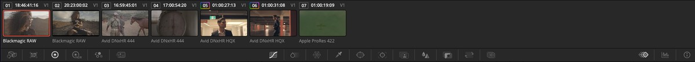
-
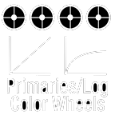
PrimariesDe fire farvehjul: Lift (skygger), Gamma (mellemtoner), Gain (highlights) og Offset (hele billedet på en gang). Det er her, I kommer til at bruge mest tid.
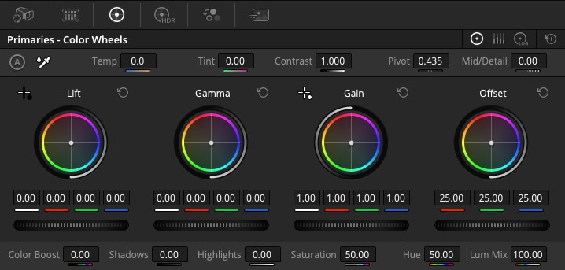
-
Curves
Samme slags justering som Primaries, men tegnet som en kurve i stedet for på hjul. Kurven giver mere præcis kontrol over bestemte lysstyrker, på bekostning af at være sværere at læse ved første øjekast.
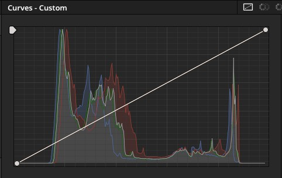
-
Qualifier
Vælger pixels ud fra farve, ikke position. Sæt Hue, Saturation og Luminance til at ramme fx en bestemt hudtone eller himlens blå, og kun de pixels bliver påvirket af resten af nodens justeringer.
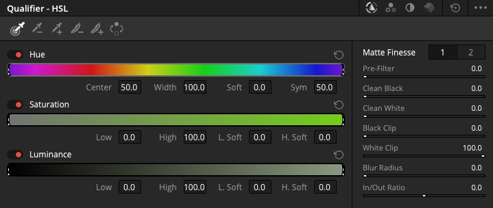
-
Window
Vælger pixels ud fra position i stedet for farve. Tegn en cirkel, firkant eller et frit polygon direkte i billedet, og kun det område bliver påvirket. Kan kombineres med Qualifier for at ramme en bestemt farve på et bestemt sted.
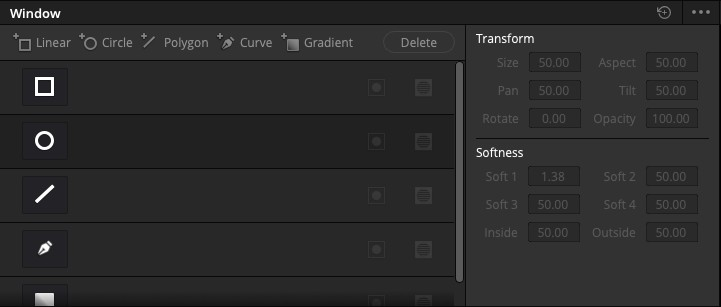
-
Key
Finpudser den matte, en Qualifier eller et Window har lavet: Key Input, Key Output og Qualifier-sektionen styrer hver deres del af overgangen mellem "helt med" og "helt udenfor".
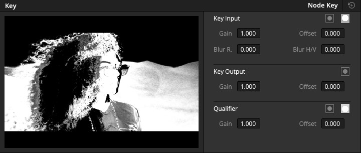
-
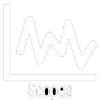
ScopesGrafer over billedets lys og farve, mere præcise end øjet. Parade og Waveform viser lysstyrke pr. farvekanal, Vectorscope viser farvemætning og -retning, CIE Chromaticity viser hvor et kameras farver ligger i forhold til hvad øjet kan se.
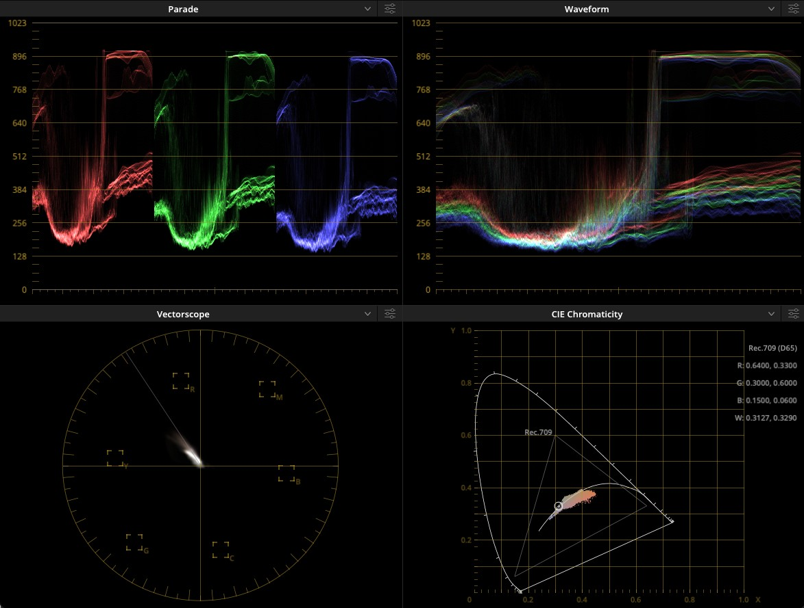
-
Viewer og Highlight
Viewer viser billedet, som det bliver. Highlight (genvej: klik ikonet under viktoren) viser i stedet, hvad en Qualifier eller et Window rammer lige nu, som en sort-hvid matte oven på et gråt billede. Uundværlig, når man skal se om en markering rammer det, den skal.
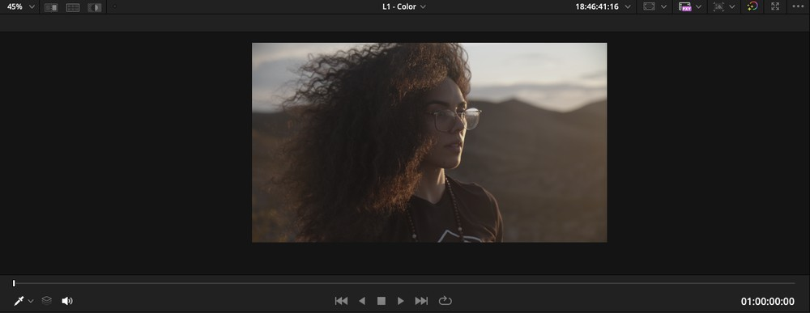
Almindelig viewer. 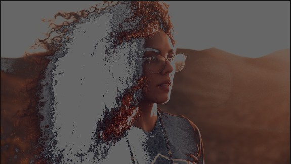
Highlight slået til. Det hvide er det, en Qualifier på håret rammer. -
Nodes
Alt det ovenstående lever inde i en node. Vil I gøre noget mere, tilføjer I endnu en node i serie, akkurat som i Fusion, bare med farvekorrektion i stedet for effekter.
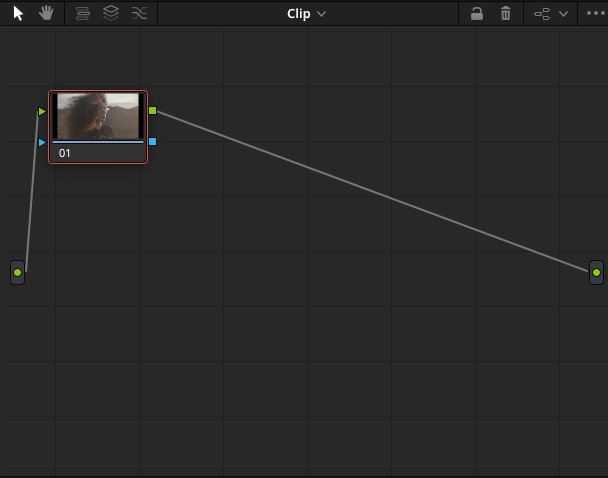
-
Effects
Nævnes kort: samme Effects-panel som i Edit og Fusion findes også her, med filtre specielt lavet til farvearbejde. Vi går ikke i dybden med det i dag.
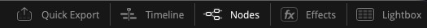
Samme knap, der åbner Nodes, sidder lige ved siden af Effects.
Anden del
Ret billedet, før I styler det
Rækkefølgen betyder noget. Først color correction: gør billedet teknisk rigtigt, med hjælp fra Scopes, så eksponering og hudtoner ligger, hvor de skal. Bagefter color grading: den kreative del, hvor I bestemmer, hvordan billedet skal føles.
Gør man det omvendt, ender man med at style et billede, der i virkeligheden er over- eller undereksponeret, og hele arbejdet skal gøres om, når fejlen opdages.
Tredje del
Superviseret leg
Nu er det jeres tur. Vælg et af klippene, og prøv jer frem med det, I lige har set: farvehjul, en Qualifier, et Window. Der er ikke noget facit, og I skal ikke genskabe noget bestemt. Spørg undervejs.
Mangler I noget at gå efter, er her tre valgfrie forslag. Vælg et, flere, eller ingen af dem, det er stadig jeres valg.
- Skift en farve. Find klippet med rosen, og brug en Qualifier til at vælge kun det røde, og skift det til blåt.
- Orange og teal. Prøv jer frem med det velkendte look fra actionfilm og trailere: varme hudtoner, kølige skygger og baggrunde.
- Ret et blåt billede. Et klip fra Hund på efterårstur er kraftigt blåt i sin hvidbalance. Prøv at rette det tilbage til noget, der ser naturligt ud.
Fjerde del
CST – Color Space Transform
Til sidst en node, der ikke retter farver, men oversætter dem, fra det farverum, kameraet optog i, til det, I arbejder i. Det er praktisk, fordi det giver jer kontrol, node for node, over noget der ellers sker automatisk i baggrunden, og fordi det er den samme knap, der løser problemet, uanset hvilket kamera footage kommer fra.
-
Tilføj effekten Color Space Transform
Find Color Space Transform i Effects, og træk den på en node. Sæt Input Color Space og Input Gamma til det, kameraet faktisk optog i. Output kan som regel stå på Use timeline, så det automatisk matcher jeres projekts egne indstillinger.
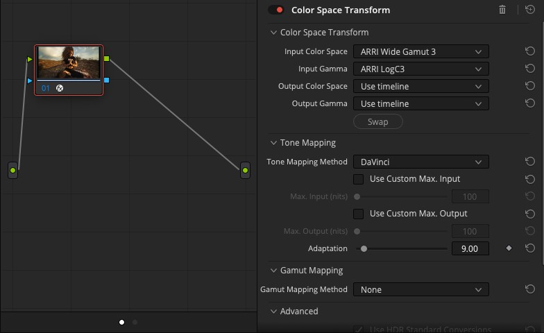
Input skal matche kameraet. Output kan næsten altid blive stående på Use timeline. -
Se forskellen
Før CST er sat rigtigt, ser billedet fladt og gråligt ud, uanset hvor meget I skruer på Primaries. Bagefter er der styr på kontrast og farve fra start, og resten af jeres grading bliver lettere.
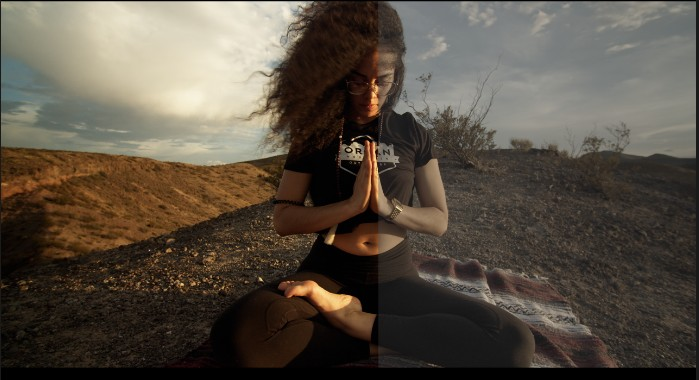
Samme klip, samme node-graf, kun CST slået til på højre halvdel.